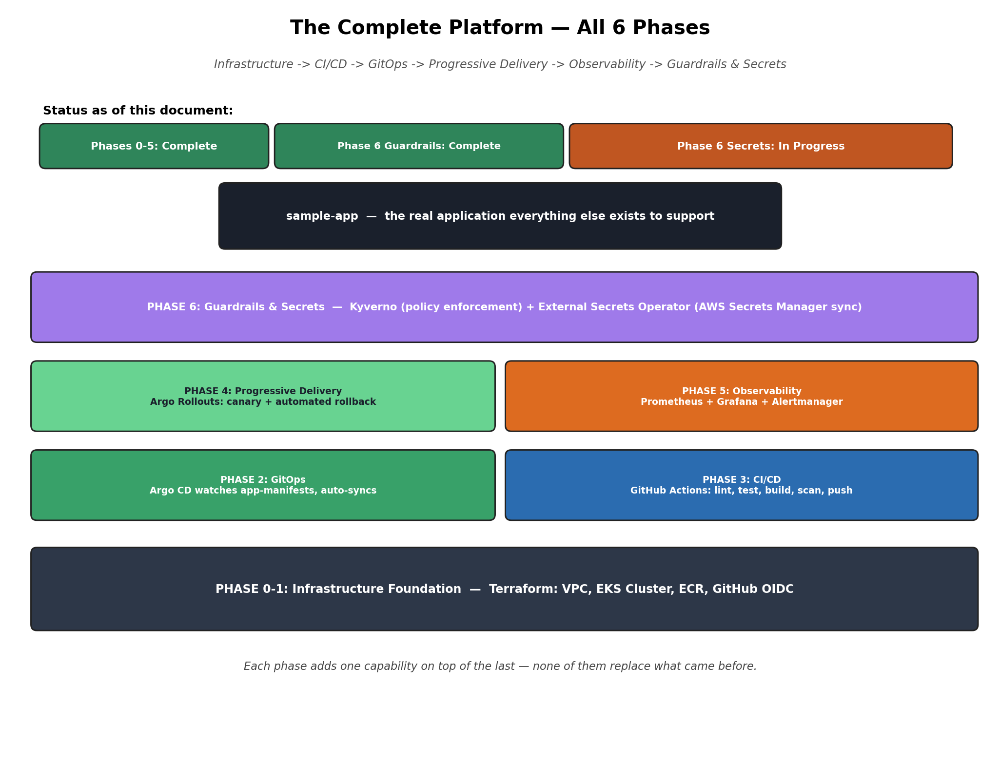
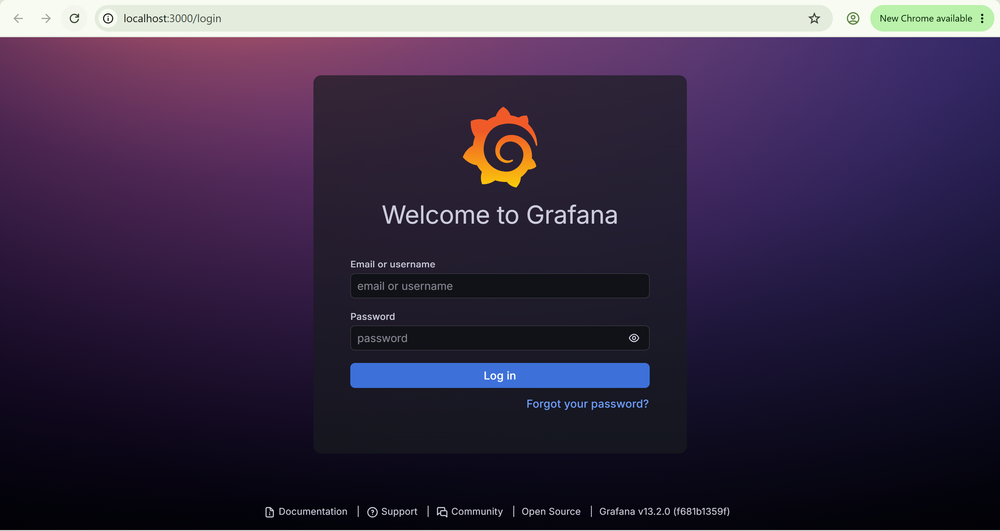
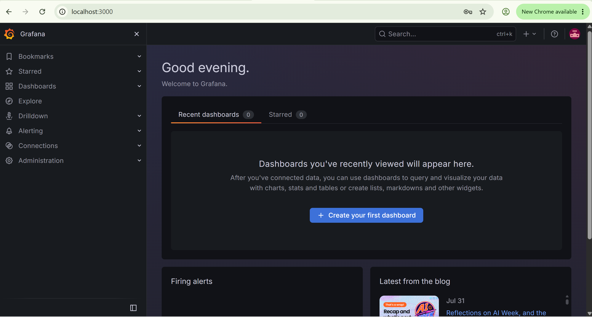
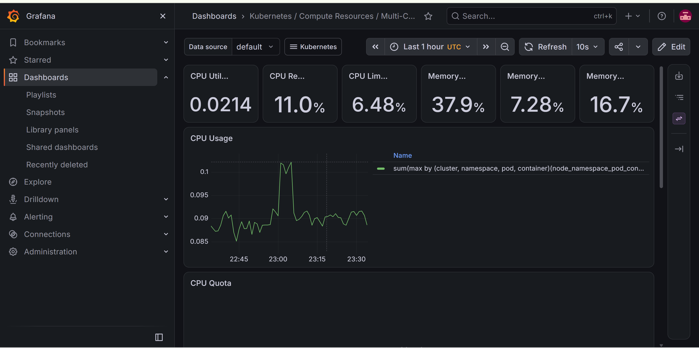
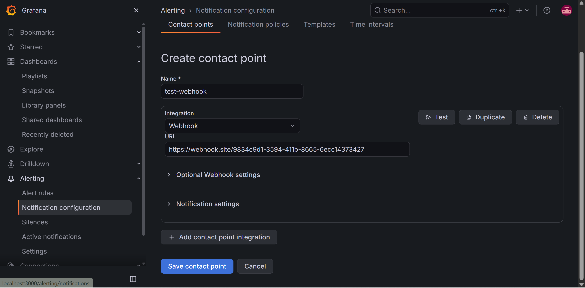
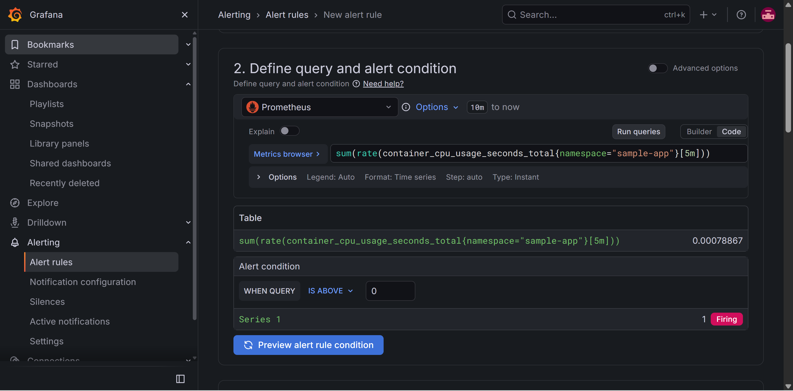
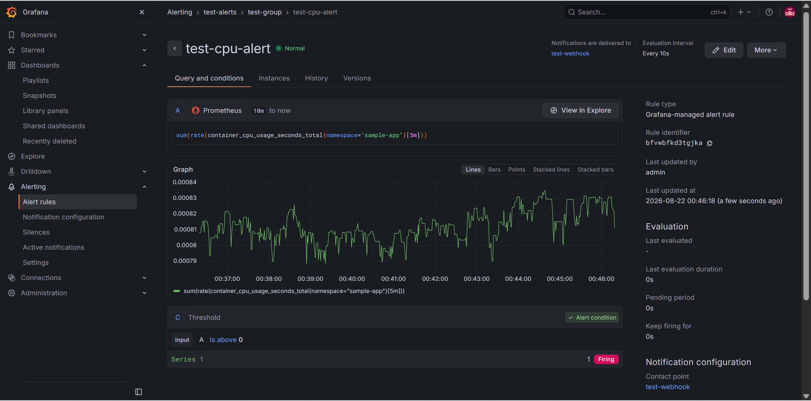
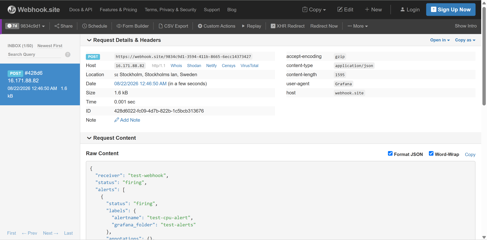

Self-Service GitOps Platform on AWS EKS
A platform that takes application code from a developer's push all the way to a safely deployed, observed, and policy-enforced production environment — with zero manual deployment steps anywhere in the chain. Built entirely on AWS EKS, described entirely as code.
Architecture
Six phases, each adding one capability on top of the last: infrastructure, CI/CD, GitOps, progressive delivery, observability, and finally guardrails and secrets — none of them replacing what came before.

What's Built
Proof — Observability, End to End
A real alert, from a real live metric, delivered to a real destination. Click any image to view the full sequence.







Real Challenges, Actually Debugged
A hard AWS vCPU quota, hit mid-build
Scaling worker nodes for a heavier workload ran straight into an account-wide vCPU ceiling — a hard limit no amount of retrying could cross. Diagnosed directly via the AWS Service Quotas API rather than guessing.
An instance type silently excluded from Free Tier
The obvious next step — a bigger instance type — turned out to not be Free Tier eligible on this account. Queried AWS directly for the real eligible list instead of trial-and-error, and found t3.small: same vCPU cost, roughly 3x the pod density.
A silent GitHub OIDC trust policy mismatch
A correctly-written IAM trust policy was still being rejected. Added a temporary debug step to decode the actual token GitHub was issuing, compared it character-for-character, and found GitHub was appending a stable numeric ID to the repo name — invisible until inspected directly.
Deliberately broken, to prove the safety net works
Pointed a canary rollout's health check at a URL that doesn't exist, on purpose, and confirmed Argo Rollouts detected 5 consecutive failures, aborted the deployment automatically, and kept the previous stable version fully healthy the entire time — zero user impact.